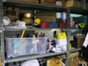
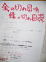

|
五研(ゴケン)とは、芸工祭実行委員会が活動する第五研修室の略であり、
実行委員会そのものの通称でもあります。
ここでは、そんな五研の様子をちょっとだけご紹介しちゃいます。
まずはこちら。
2006年版五研パーカー。
当日困った時は、このパーカーを着た実行委員に声をおかけください。
続いて、五研部屋の中を覗いてみましょう！
|
|
|---|
|
|
| ①入口 |
|
第五研修室の入口。
一昨年の学祭ロゴ・ゲイコちゃん(※1)がお出迎え。
|
| ②電ドラ置き場 |
|
電ドラ(※2)が整然と並ぶ棚。
五研が責任を持って管理しています。 |
| ③キッチン |
|
五研で最も特徴的なものの一つがこのキッチン。
五研は毎日ここでご飯を作り、皆で食べています。
他企画の人が使いに来ることもしばしば。
|
|
| ④お泊りランキング |
|
五研部屋を始めとする厚生棟３階は、学祭期間中は徹夜解禁となり、一晩中作業で泊り込む人が多数生息します。
そんなお泊りの数を数え、競う指標となるのが、このお泊りランキング。
五研時計(※3)でAM5:00を過ぎれば一つシールが貼られます。
|
| ⑤工具たち |
|  |
工具類置き場。こちらも五研が一括で管理し、他企画の人が作業のために借りにやって来ます。
こうした道具類の貸出管理も、五研の地味だけど大事な仕事の一つ。
|
| ⑥五研カレンダー |
|
10月、11月の予定が書き込まれた手作りカレンダー。
お仕事の締め切りからメンバーの誕生日まで、様々な予定が書き込まれる。
学祭が終わった後に見返すと、数々の思い出が蘇って来る。
|
| ⑦掲示板 |
|
コルクボードの掲示板。
お仕事関連の書類がずらり。
金の切れ目は縁の切れ目表(※4)なんてものも。
|
| ⑧各部署棚 |
各部署の重要書類が納められた棚。
ものが溢れ返っていて見れたもんじゃないので、画像は自粛しておきます。
|
| ⑨ＰＣルーム |
|
個人のパソコンを持ち込み、作業しています。
ネットも繋がっているので、意外と環境は整ってます。
ちなみにこの部屋には、お泊りする人が使う大量の毛布が保管されてます。
|
| ⑩五研日記 |
|
五研メンバーによる日記帳。
常に五研に置いてあり、いつでも誰でも書き込むことが出来る。
|
|
| ※1：ゲイコちゃん |  |
| 第１回芸工祭のロゴ。"geikou"の"g"をモチーフに作られている。ステッカー、ライターなど、オリジナルグッズのデザインとしても大活躍した。 |
|
| ※2：電ドラ | |
電気ドラムの略称。いわゆる延長コード。
五研では、せんだみつおゲームの応用である『電ドラゲーム』が今年ブームである。
さぁ、みんなも一緒に、電ドラ、まきまき、12A！ |
|
| ※3：五研時計 | |
お泊りランキング上方の壁に掛けられている時計。
普通の時計より５分進んでいるため、遅刻防止にも効果あり。 |
|
| ※4：金の切れ目は縁の切れ目表 |  |
| メンバー間の金銭の貸し借りをメモした表。これで借金を踏み倒す心配もなし！ |
|